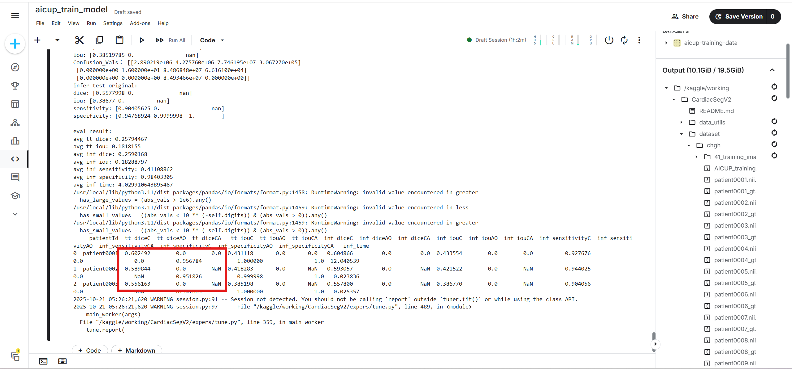
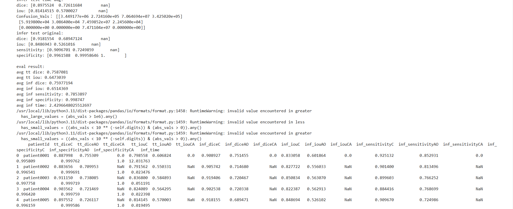
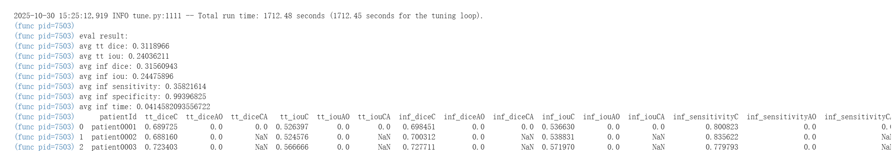
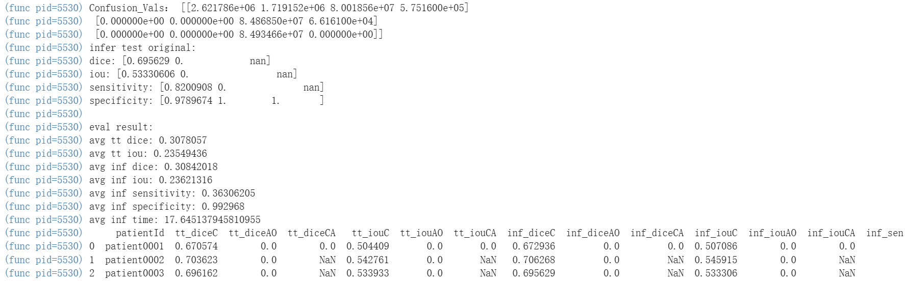
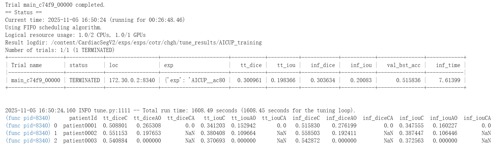
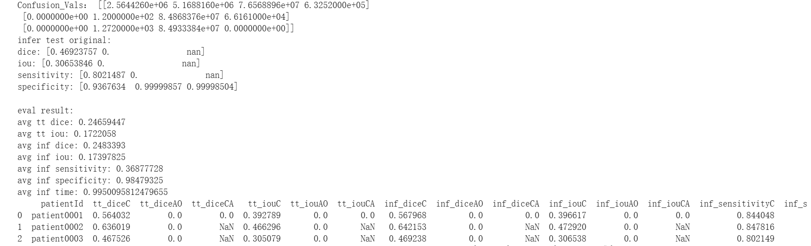
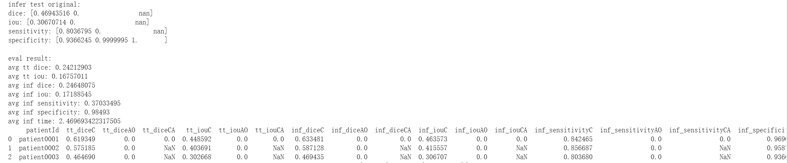
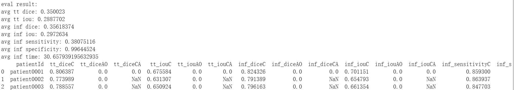

| 總分 | 完成後打勾 | 配分 | 分項描述 |
|---|---|---|---|
| 10 | 4 | Simple baseline - 完成colab baseline的訓練並產生權重檔 | |
| 4 | Medium baseline - 調整並增加使用的訓練資料集(AICUP_training.json) | ||
| 2 | Strong baseline - 使用其他模型(例如. Attn U-Net、UNETR、Swin UNETR...等)，對心臟資料進行訓練，並繳交colab程式碼。 | ||
| -10 | 沒有寫100字心得 |
| Simple Baseline Dice分數圖片，訓練/驗證/測試(9/3/3)  |
| Medium Baseline Dice分數圖片，訓練/驗證/測試(40/5/5)  |
| Strong Baseline colab連結: https://colab.research.google.com/drive/1bgTG8toNYNattytzLk_vyDGHVxmcGijb?usp=sharing |
| Strong Baseline Dice分數圖片 使用了attention_unet  |
| Strong Baseline colab連結: https://colab.research.google.com/drive/1acxw3NPuziNOC4sb-ru_WKqLAR3gEPsj?usp=sharing |
| Strong Baseline Dice分數圖片 使用了SwinUNETR  |
| Strong Baseline colab連結: https://colab.research.google.com/drive/1bgTG8toNYNattytzLk_vyDGHVxmcGijb?usp=sharing |
| Strong Baseline Dice分數圖片 使用了cotr  |
| Strong Baseline colab連結: https://colab.research.google.com/drive/1nAulvpm4ZAvcdNqBe1fZqnusyNzyPoCf?usp=sharing |
| Strong Baseline Dice分數圖片 使用了DynUNet  |
| Strong Baseline colab連結: https://colab.research.google.com/drive/1-_mIA1T5UFi06S4NbaUBOL6Ho6Pp1hC2?usp=sharing |
| Strong Baseline Dice分數圖片 使用了unetr  |
| Strong Baseline colab連結: https://colab.research.google.com/drive/1C9aYpA6SSbm8OVA4jfIq_eeAxuvZY75D?usp=sharing |
| Strong Baseline Dice分數圖片 使用了unetcnx_a1  |